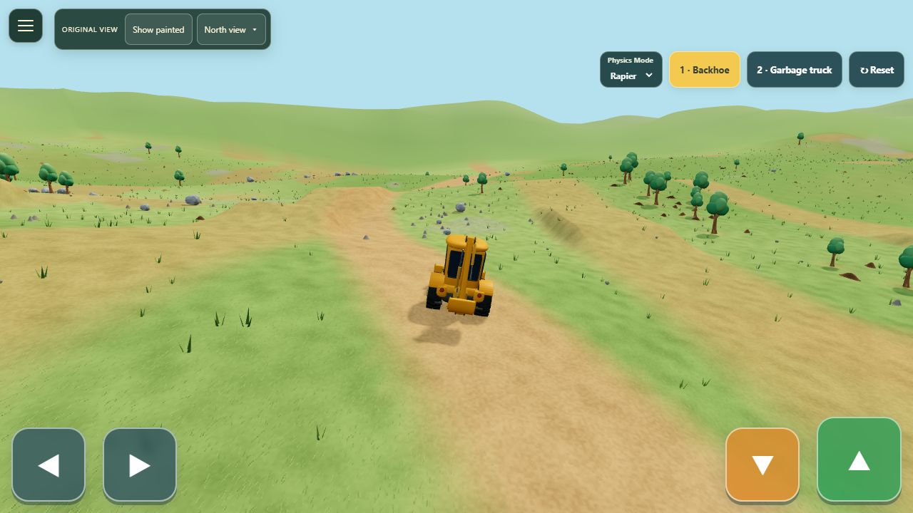
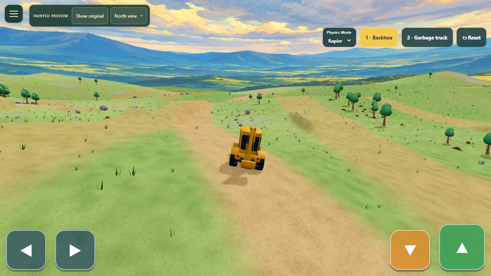
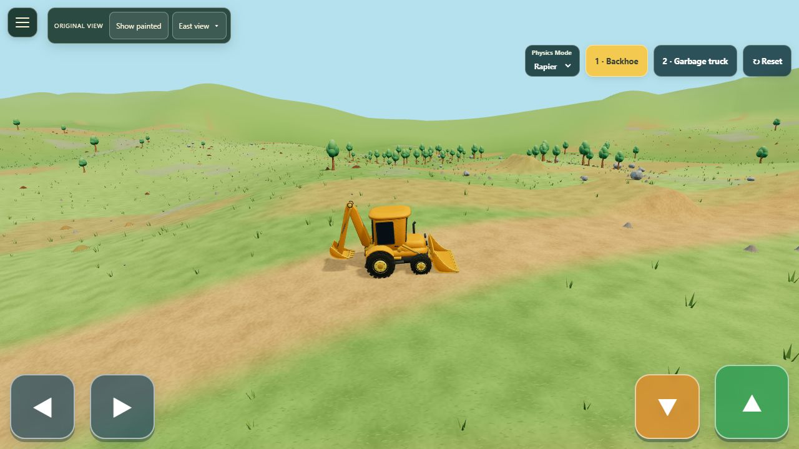
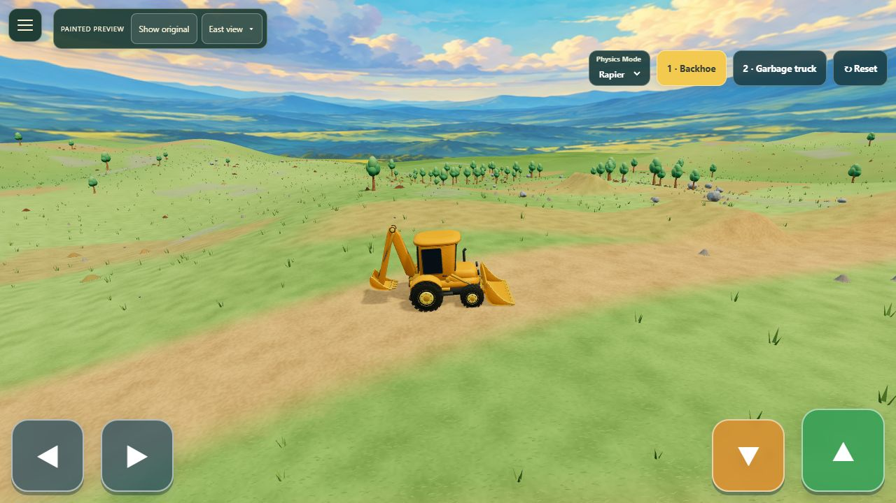
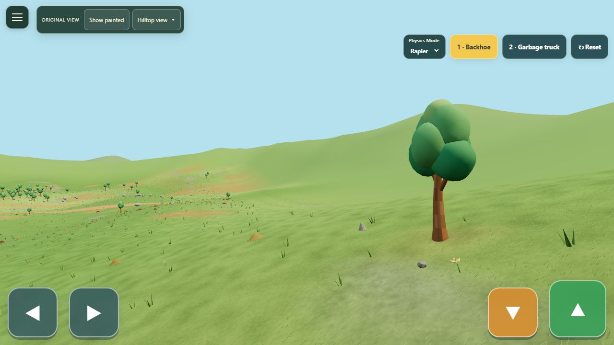
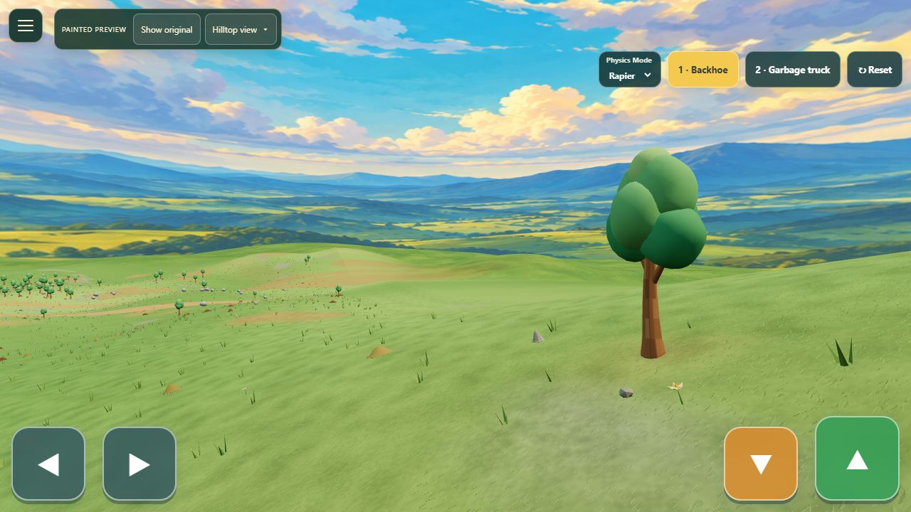

01 / Looking north


02 / Looking east


03 / From the high hilltop


A new world beyond the driving terrain. Original hand-painted artwork, layered distant hills and warm cloud light. Approved painted scenery is now the default in Play. This gallery preserves the before-and-after comparison.





